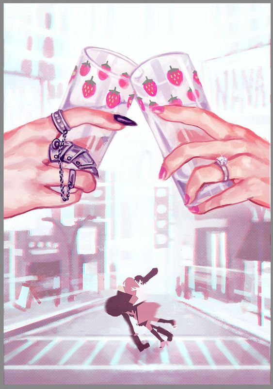

Imagen desde código, modificando tamaño a traves de Pixeles
Nana (ナナ) es una serie de manga escrita e ilustrada por Ai Yazawa. Fue serializada en la revista Cookie de la editorial Shueisha desde el 15 de mayo de 2000 hasta junio de 2009, cuando fue puesta en hiatus debido a una enfermedad de la autora. Eventualmente, Yazawa se recuperó, pero el manga sigue en pausa indefinida. Los doce primeros volúmenes han vendido más de 22 millones de copias.
La historia acompaña a sus dos protagonistas durante el inicio de sus nuevas vidas tras independizarse en Tokio, partiendo por la coincidiencia de que ambas comparten el mismo nombre, Nana, y siguiendo con las confusiones y caprichos que este hecho provoca. Sin embargo, pese a coincidir en su nombre, edad y viaje y convivencia en Tokio, lo que las separa ampliamente es la radical diferencia de sus personalidades. La primera, Nana Komatsu, tiene la inocencia de una niña y nunca puede mantener el control sobre la realidad que le espera, y Nana Ōsaki, es una cantante de punk que posee una fuerte personalidad. El conocer y convivir con Ōsaki y sus amigos y compañeros de la banda de punk "Black Stones", así como las charlas con su amiga de instituto y confidente Junko Saotome, tendrán una enorme influencia en Komatsu y harán que descubra cosas desconocidas para ella, madure y se adentre en su vida adulta. Tanto Ōsaki como sus compañeros de grupo tienen una gran influencia de los Sex Pistols, siendo uno de ellos (su ex-novio Ren Honjō) literalmente la viva imagen de Sid Vicious.
Actualmente, el manga consta de 21 tomos, y la serie aún sigue abierta -en tanto que nunca tuvo un final-. La serie fue adaptada a dos películas en imagen real, en 2005 y 2006 respectivamente, y una serie de anime en el 2006. La película está protagonizada por las actrices Aoi Miyazaki y Mika Nakashima como Nana Komatsu y Nana Ōsaki respectivamente. En la secuela, Nakashima retomó su papel como Nana Ōsaki, pero fue Yui Ichikawa quien interpretó a Nana Komatsu en esta ocasión. La serie de anime fue estrenada por primera vez en la televisión japonesa el 5 de abril de 2006.
Imagen desde código, modificando tamaño a traves de Porcentajes
El manga fue escrito e ilustrado por la mangaka Ai Yazawa, autora de Paradise Kiss; Nana apareció por primera vez en la revista Cookie en el año 2000 donde fue publicada hasta junio de 2009, cuando la serie entró en un periodo de pausa debido a problemas de salud de la autora.Yazawa se recuperó de sus problemas médicos en abril de 2010 pero no especificó cuando o si realmente continuaría con su trabajo. Los capítulos individuales fueron recolectados y publicados en 21 volúmenes en formato tankōbon por la editorial japonesa Shueisha. Nana está licenciado al idioma inglés en Estados Unidos por Viz Media. Fue serializado en la antología de Viz Media, llamada Shojo Beat, iniciando su publicación en julio de 2005 hasta agosto de 2007; fueron publicados los 21 volúmenes hasta julio de 2010.
Imagen Redondeada y con Borde
Nana se ha adaptado a anime, fue dirigida por Morio Asaka y animada por el estudio Madhouse. Las canciones del primer opening y del tercer ending son interpretadas por Anna Tsuchiya como Nana Osaki, y Olivia Lufkin interpreta el segundo opening y primer ending como Reira. El primer DVD se lanzó el 7 de julio de 2006. Existen dos bandas sonoras del anime, Nana 707 soundtracks y Nana 7to8 soundtrack. Fueron realizadas dos versiones de Nana 707: una edición limitada con formato de libro de cubierta dura, con avances de la serie y además de 7 postales y la edición regular. La banda sonora de la serie, "NANA BEST", fue lanzada el 21 de marzo de 2007. Consiste en 14 melodías, cuenta con todas las melodías pasadas en el anime. La primera edición limitada en versión deluxe, contiene un DVD junto a materiales en videos inéditos de NANA.

Imagen Animada (.gif)
Nana Osaki
A primera vista, Nana K. ve a Nana O. como alguien "guay", que a pesar de ser simpática es muy misteriosa y no le gusta compartir su vida privada y sus sentimientos con otras personas. Nana O. tiende a ser sarcástica con Nana K. porque como es muy ingenua e inocente es fácil gastarle bromas. Un ejemplo de ellos es el apodo de Nana K., "Hachi/Hachiko" pues Nana O. piensa que ella actúa como un perro leal.

Imágenes Flotantes
Apariencia
Es una joven esbelta de cabello corto y negro, ojos marrones y un tatuaje de una flor de loto rosa en la parte superior de su brazo izquierdo. Sus uñas son largas y con buena forma, normalmente, están pintadas de un tono rojo oscuro; en el pasado solía pintarlas de color negro. También se pinta las uñas de los pies del mismo color. Su maquillaje habitual es un pintalabios rojo, rímel negro y sombra de ojos púrpura. Hachi comenta en el capítulo 1 que, cuando se conocieron, notó que Ōsaki tenía unas pestañas envidiablemente largas y cinco perforaciones en su oreja izquierda, y tres en la derecha. Muchos personajes describen a Ōsaki como guapa, incluyendo a Kyosuke Takakura.
Personalidad
Nana puede dar la impresión de ser una apática rockera gótica-punk, pero tiene un corazón amable y es una amiga muy devota. A pesar de las dificultades que atravesó durante su infancia y adolescencia, Nana "pule los fragmentos de sus sueños" y está decidida a tener éxito como vocalista principal de Black Stones. Está comprometida con Ren Honjo (su primer amor), aunque también tiene ciertos sentimientos por Yasushi Takagi. A pesar de insistir en que quiere ser independiente, incluso llegando a ser comparada con "un gato callejero lleno de orgullo" por Hachi, Nana a menudo recurre a Yasu en busca de ayuda. Como dice Hachi, "las cosas favoritas de Nana nunca cambian": Su diseñadora favorita es Vivienne Westwood, y su grupo favorito son los Sex Pistols. Fuma Seven Stars y adora el café con leche y el pastel de fresa. Su flor favorita es el ren (flor de loto). Prepara toda su comida con demasiada sal, la cual sólo Ren parece disfrutar. Nana tiene una actitud sarcástica y un sentido del humor contundente; en broma se llama a sí misma sádica. Nana es prudente en lo que respecta al sexo, ya que nunca mantiene relaciones con Ren a menos que esté utilizando un método anticonceptivo como la píldora, pues no se siente preparada para tener hijos ya que eso le impediría seguir con su sueño de cantar.
Biografía
Nana nació en Meguro, Tokio. Es la hija ilegítima de Misuzu Osaki (más tarde Uehara), quien la dejó al cuidado de su abuela cuando tenía cuatro años. Nana no ha visto a su madre desde entonces, y por lo tanto ha olvidado su apariencia. Miyuki Osaki (la abuela de Nana), era muy estricta y le prohibió usar ropa de color rojo y rosa porque no quería que llegase a "tentar" a los hombres y se pareciese a su madre. Nana trabajaba para su abuela, aunque esta no le pagaba ni un duro. Desde temprana edad, Nana mostró un comportamiento rebelde e independiente. En la escuela secundaria, no tenía amigos y era intimidante; rara vez se relacionaba con sus compañeros. Su situación cambia cuando conoce a Nobuo Terashima, quien le presta sus CDs y la introduce al punk con grupos como Sex Pistols. Eventualmente, Nobu logró abrirse un paso a través de su gélido exterior y comprende que Nana es en realidad una persona cariñosa.
Cuando es falsamente acusada de prostitución y expulsada de la escuela, Nana no niega las acusaciones. Más tarde le confiesa a Ren que se arrepiente de su decisión, declarando que el incidente pudo haber llevado a agravar la salud de abuela y matarla del disgusto. Sin embargo, tras la muerte de su abuela, como regalo navideño para ella misma, Nana se compra un vestido rojo. Se pone ese vestido rojo en un concierto punk al que asiste con Nobu, donde ve por primera vez a Ren Honjō. Nana es cautivada por su fuerza en el escenario, razón por la que acepta su oferta de unirse a la banda que estaba comenzando con Nobu y su amigo, Yasushi Takagi.
Siendo la vocalista principal de la banda Black Stones (BLAST), Nana consiguió un gran número de fans en su ciudad natal. Desarrolló una apariencia "cool" y punk. Eventualmente, se mudó con Ren, y los dos compartieron un romance intenso hasta que Ren le mencionó que se le había ofrecido un gran contrato discográfico en Tokio y que dejaría a Blast para tocar en la banda Trapnest. Aunque Ren y Nana todavía se amaban, creyeron que una relación a distancia no tendría sentido. Nana se negó con orgullo a abandonar su propia carrera musical para seguir a Ren; por lo tanto, su relación terminó. Más tarde, el 5 de marzo de 2001, el día que cumplía 20 años, Nana se mudó por su cuenta a Tokio decidida a seguir su sueño de convertirse en una cantante de éxito.
En el tren de camino a Tokio conoce fortuitamente a Nana Komatsu que también se muda a Tokio con grandes sueños que cumplir. Luego se vuelve a encontrar con ella mientras buscaba apartamiento y deciden convertirse en compañeras de piso a pesar de sus personalidades tan opuestas.
Imagen de Fondo
Nana Ōsaki es una cantante punk cuyo único deseo es poder debutar con su grupo y superar a la popular banda Trapnest, en la cual su ex-novio Ren Honjō toca la guitarra. Nana y Ren fueron compañeros en la misma banda en el pasado (Black Stones), pero todo eso terminó cuando a Ren se convierte en integrante deTrapnest, por lo que abandona a su banda para dirigirse a Tokio con su nueva banda.
Osaki, tras darse cuenta de que si iba con él a Tokio vería sus oportunidades de hacerse una cantante popular notablemente disminuidas, decide que una vida en la que simplemente sea considerada la novia de Ren, quedando profesionalmente a su sombra y cumpliendo un papel más de ama de casa que de mujer independiente, no es la vida que ella desea. Por lo que, finalmente, decide dejarlo ir.
Nana Komatsu por su parte. vivó de forma muy mimada, sobreprotegida; muy pocas veces tenía que pensar por su propia cuenta, lo que conforme se hizo adulta comenzó a traerle problemas mayores. Con el hábito de enamorarse a primera vista de cualquiera, siempre depende de la gente que le rodea para que le ayuden a ponerle los pies sobre la tierra, sobre todo su amiga de instituto, Junko Saotome, apodada Jun. Tras finalizar el instituto, Junko la deja atrás para asistir a una prestigiosa universidad de arte en Tokio. Nana, desesperadamente quiso seguir tanto a Junko como a su novio Shōji Endo, a Tokio. Pero tenía ningún medio para poder vivir allí o poder establecerse. Sin embargo, después de trabajar, finalmente logra ahorrar lo suficiente para poder independizarse, mudarse a Tokio y comenzar su vida adulta.
Mapa de Imagen
Black Stones, acortado como Blast (ブラスト Burasuto), es una banda japonesa de punk rock. Sus miembros son: Nana Ōsaki (voz), Yasushi Takagi (batería), Nobuo Terashima (guitarra) y Shinichi Okazaki (bajo). En su formación original, Ren Honjō era el bajista, pero dejó la banda para unirse a Trapnest.
Los representa la discográfica Gaia Records.

Filtros de Imagen
Nana Ōsaki (大崎 ナナ Ōsaki Nana)
Voz por: Romi Park
Es la vocalista de Black Stones, y además toca la guitarra como aficionada fuera del grupo. Está enamorada de Ren. Tuvo una infancia muy dura, su madre la abandonó y tuvo que cuidarla su abuela. Aparentemente es una persona muy fuerte y decidida pero en realidad es una persona muy insegura que se siente triste y un poco obsesiva en cuanto a los pocos amigos que tiene, es tal el miedo que tiene de perderlos que llega a tener un comportamiento posesivo; debido a su dura infancia.
Imagen desde Internet
Si te interesa tener Wallpaper de Nana, la página WEB Wallpaper ABYS es una excelente opción. Cuenta con una gran diversidad de fondos, en excelente calidad, tanto para ordenadores como para celulares. A continuación podrás observar uno de ellos.